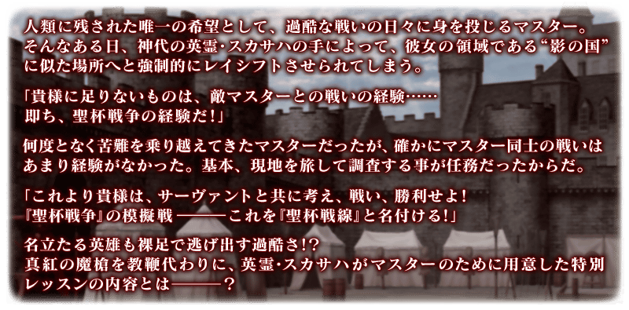

預定舉辦期間限定活動「影之國的舞鬥會 ～貓咪與兔子與聖杯戰爭～」！
在英靈・斯卡哈的領域“影之國”，開始為了御主所準備的特別訓練！
本活動中，推進主線關卡後會開放「聖杯戰線」。
另外自由關卡中收集活動道具的話，除了可交換各種報酬外，也可挑戰抽選來贏得各式各樣的道具！
邊於自由關卡收集活動道具，以贏得聖杯戰線來獲得聖杯做為目標吧！
※本頁面皆為開發中圖片。會有與實際圖片相異的情況。 ※一部份的關卡為後日開放。 ※敬請注意本活動中沒有超高難易度關卡。
◆活動舉辦期間◆
2020年9月18日(五) 17:00～
◆活動參加條件◆
滿足以下條件的御主才能參加
・通過「特異點F 炎上汙染都市 冬木」
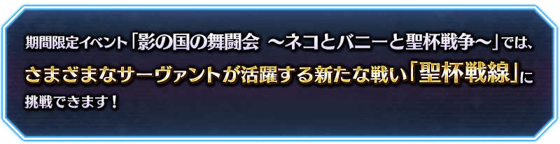
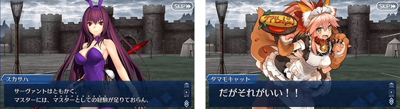
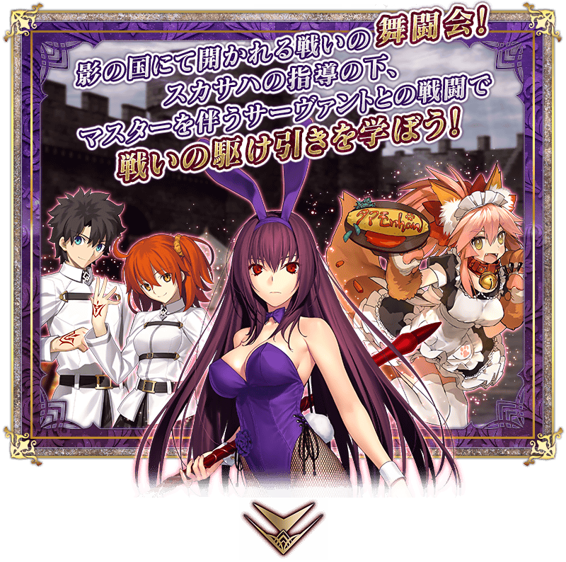 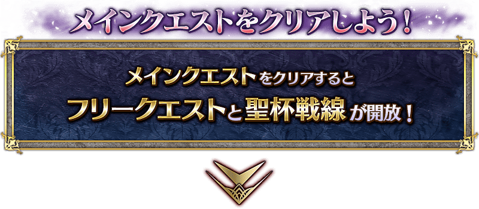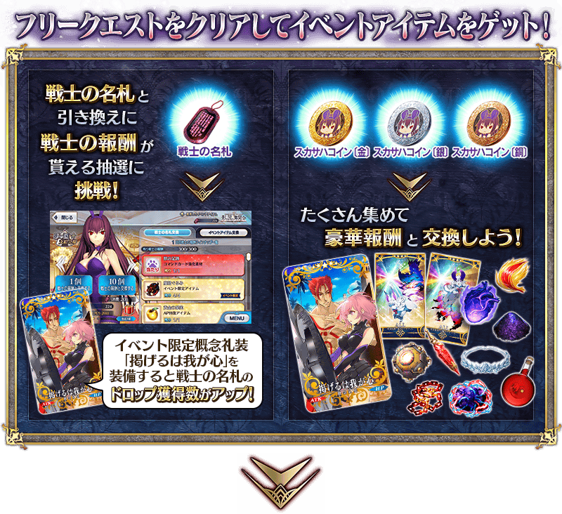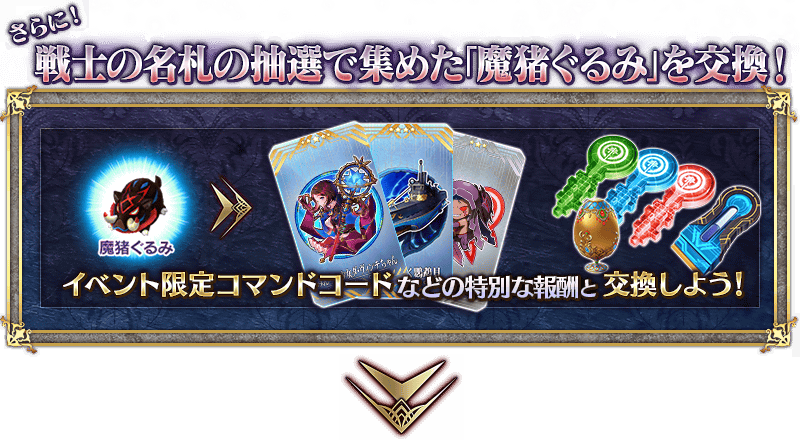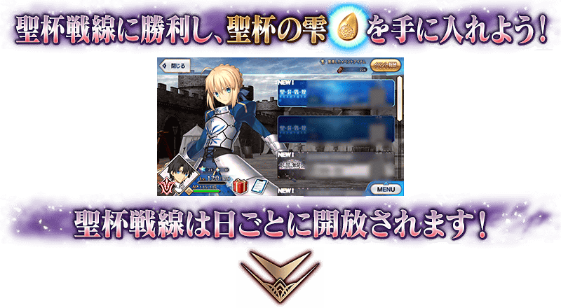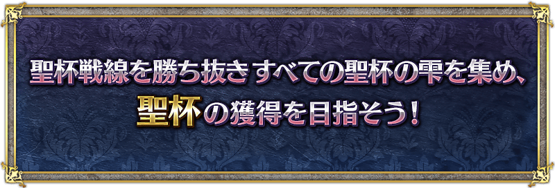
【9月19日(六) 17:00追記】
本活動的自由關卡會以下述的日程切換。
【自由關卡開放時間表】
| 開放期間 | 開放的自由關卡 |
|---|---|
|
2020年9月18日(五) 17:00～ 2020年9月21日(一) 16:59 |
第1期自由關卡 |
|
2020年9月21日(一) 17:00～ 2020年9月24日(四) 16:59 |
第2期自由關卡 |
|
2020年9月24日(四) 17:00～ 2020年10月2日(五) 11:59 |
第3期自由關卡 |
※請注意無法遊玩超過開放期間的自由關卡。
【9月18日(五) 17:00追記】
本活動中，「聖杯戰線」將會逐日開放。
聖杯戰線是分成敵我方的御主與從者，於専用的戰鬥場地反覆戰鬥，爭奪勝敗。勝利後可入手1個聖杯之雫，收集7個的話能交換聖杯，取勝所有的戰鬥，以聖杯的獲得為目標吧！
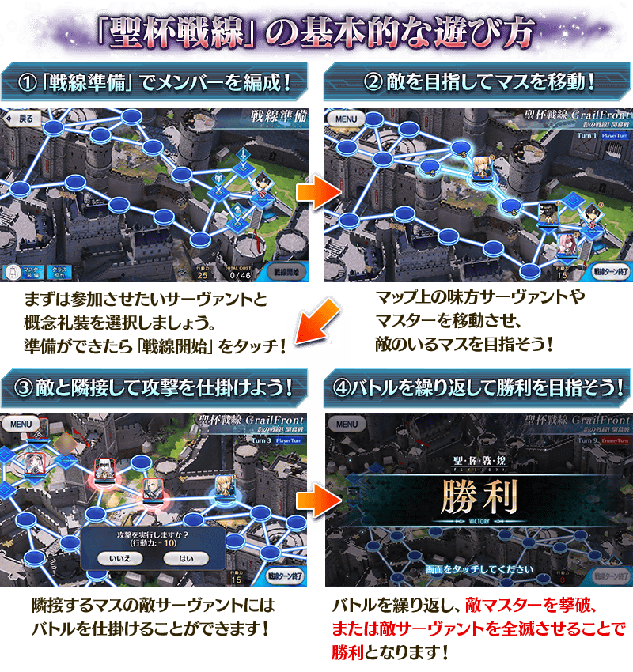
【聖杯戰線開放時間表】
| 聖杯戰線開放時間 | 開放的聖杯戰線 |
|---|---|
| 2020年9月18日(五) 17:00～ | 聖杯戰線 第一戰 |
| 2020年9月19日(六) 17:00～ | 聖杯戰線 第二戰 |
| 2020年9月20日(日) 17:00～ | 聖杯戰線 第三戰 |
| 2020年9月21日(一) 17:00～ | 聖杯戰線 第四戰 |
| 2020年9月22日(二) 17:00～ | 聖杯戰線 第五戰 |
| 2020年9月23日(三) 17:00～ | 聖杯戰線 第六戰 |
| 2020年9月24日(四) 17:00～ | 聖杯戰線 第七戰 |
※聖杯戰線可獲得的通過報酬、戦利品、御主EXP、魔術禮裝EXP、絆點數只限初次通過時。 ※聖杯戰線中發生的戰鬥不包含在任務的達成條件。 ※開放的聖杯戰線能以任意的順序遊玩。 ※敬請注意聖杯戰線開戰的情況，該戰鬥結束前無法「強化」「召喚」等聖杯戰線以外的事情(戰鬥的途中選擇「戰線脫離」也可回到聖杯戰線的選擇畫面，但聖杯戰線會重置)。 ※請注意選擇「戰線脫離」回到聖杯戰線的選擇畫面的情況，不會退回在聖杯戰線開始時消耗的AP。
首先在「戰線準備」編成挑戰聖杯戰線的成員！
聖杯戰線中，首先一開始在「戰線準備畫面」，會選擇御主裝備的魔術禮裝和出撃的從者。由於各聖杯戰線會決定好TOTAL COST，控制在COST內的編成吧。最少要有1位的從者出撃，不用填滿所有的出撃格也可開戰。
編成結束後，點擊畫面右下的「戰線開始」的話會開始聖杯戰線開始。


聖杯戰線是Player turn與Enemy turn反覆進行
聖杯戰線中，我方可在地圖上行動Player turn與敵方行動的Enemy turn反覆交互進行。
Player turn、Enemy turn一樣，消耗會在每回合開始時全回復的行動力讓御主和從者移動和攻擊，沒有行動力或點擊畫面右下的「戰線回合結束」的話會結束回合。
反覆交互回合，撃破敵御主或敵從者全滅的話，就會勝利。
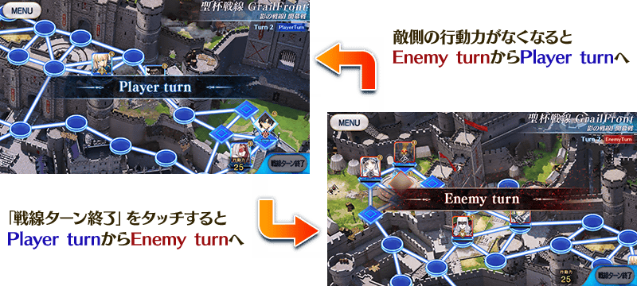
從者與御主的不同
聖杯戰線是地圖上的從者與御主行動來推進。在地圖上可行動與消耗行動力基本相同，可用從者與御主攻擊的對手和有關勝敗的條件等，各自特徴有異。
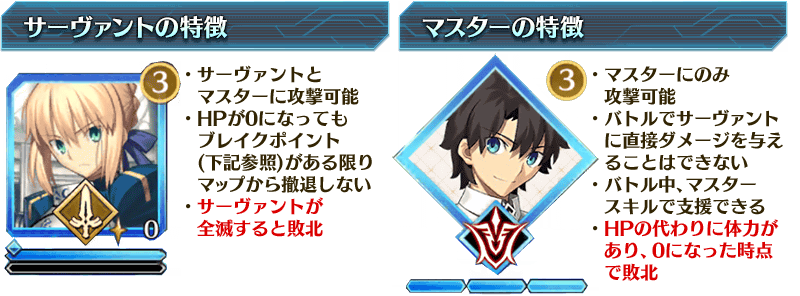
關於從者的BREAK點數
聖杯戰線的戰鬥中，存在著從者HP變成0時會消耗的BREAK點數。
戰鬥中變成HP0的從者，會暫時從該戰鬥撤退，回到地圖後BREAK點數讓HP全回復。以BREAK點數0的狀態再度變成HP0的話，從者會從地圖上撤退。
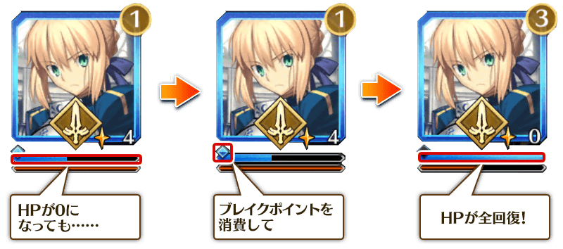

掌握地圖畫面的看法
聖杯戰線的地圖畫面中，可確認行動力和從者的狀態等。點擊我方從者的圖示的話，能確認該從者的數值畫面。
另外，長按我方從者圖示的情況會顯示從者詳細畫面，長按敵從者圖示的情況會顯示狀態變化詳細。


從者的行動次數
是1回合之間該從者可行動的次數。
BREAK點數
從者的HP變成0後消耗1，HP全回復。
以BREAK點數0的狀態再度變成HP0的話，被撃破者會從地圖撤退。
HP條/NP條
藍色條表示HP、紅色條表示NP。
HP/ATK
顯示HP的現在值與ATK的數值。
技能
顯示從者能使用的技能。
使用後，會顯示下次變得能使用前的必要回合數。
狀態效果
顯示靠技能和格子效果賦予的狀態效果圖示。
Critical星星數
顯示戰鬥中未消耗而繼承的Critical星星數。
關於地圖上的移動

點擊我方從者和御主的話，會顯示能移動可能的格子與在移動時消耗的行動力，點擊這些格子後會結束移動。從者和御主只要還殘留行動次數與行動力，在1回合能行動好幾次。
從者位置的替換
移動到有我方的格子的話，能替換位置。
進行替換會移動2位，此時行動力消耗10，從者的行動次數也各自-1。

與敵從者的戰鬥
對上鄰接的敵從者，靠行動力消耗-10「攻擊」的話會發生戰鬥，經過對應參加戰鬥的攻擊側從者數的回合後，敵我無論哪方所有從者的HP變成0回到地圖畫面。
聖杯戰線的戰鬥與平常的戰鬥同様可選擇技能的使用和選擇指令卡行動。1次的戰鬥中敵我方哪方都能行動，由於開始戰鬥的一方會先制行動，可以的話從我方開始攻擊對戰鬥會有利的推進。
另外，與在戰鬥發生時受到攻擊的對象鄰接格子有配置從者的情況，那些的從者也會參加戰鬥。
還有，聖杯戰線的戰鬥中無法撤退。
參加戰鬥的例子

上述情況，在與攻擊的對象者鄰接格子有我方與敵方從者各1位參加戰鬥，以2對2的狀況開始戰鬥。
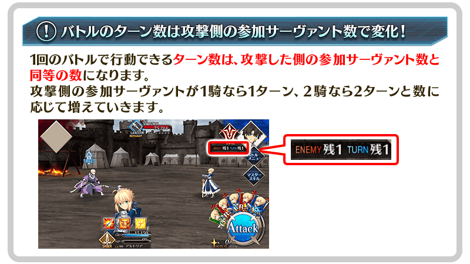
關於技能及狀態效果
與平常的戰鬥同様，聖杯戰線中也可使用從者的技能。
御主技能就算戰鬥的參加者與御主的格子分離也可使用。
另外，技能的再使用必須的回合數和靠技能和概念禮裝賦予的狀態效果回合數、效果次數，戰鬥結束後同地圖內中也會繼承，下個戰鬥中繼續計算。
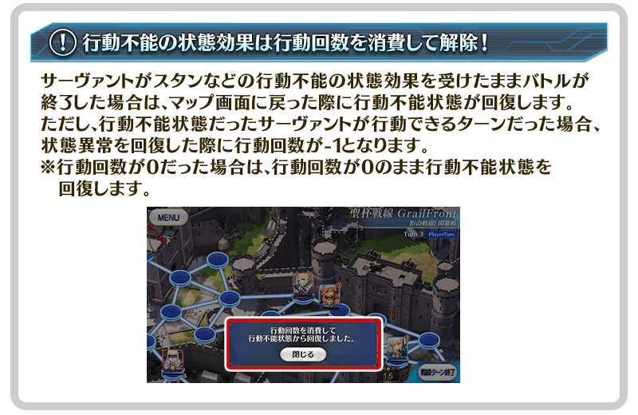
Critical星星的繼承
在戰鬥結束時前獲得的未消耗Critical星星，在戰鬥結束時會平均繼承給在場地殘留的從者。此Critical星星會在下次戰鬥開始時消耗。
另外，在戰鬥參加的複數從者持有Critical星星的情況，各從者的持有Critical星星合計數會在下次戰鬥開始時消耗。
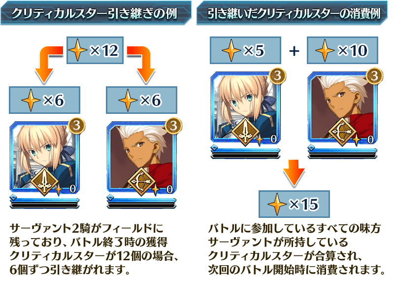
於活動關卡收集「戰士的名牌」，在影之國支付會場交換戰士報酬吧！
戰士報酬的交換是以抽選方式進行す。
在各戰士報酬會放入1個大獎道具。
抽到大獎道具後，點擊「重置戰士報酬」點擊的話，會補充新的大獎道具，切換到下個陣容。
放入大獎道具的陣容有10次份！
獲得大獎道具，清空注目獎品後按下「戰士報酬重置」，補充大獎道具吧！
※戰士報酬中的活動専用道具「魔豬玩偶」，收集的話可交換活動限定指令紋章等豪華道具。 ※第11次之後不會補充大獎道具及「黃金果實」「白銀果實」。 ※交換期間結束後「戰士的名牌」會消失。
◆交換期間◆
2020年9月18日(五) 17:00～
◆戰士報酬陣容◆
【大獎道具】
| 陣容次數 | 大獎道具 | |||||
|---|---|---|---|---|---|---|
| 第1～5次 |

|
獸之足跡 | ||||
| 第6次 |

|
傳承結晶 | ||||
| 第7次 |

|
英靈結晶・流星之芙芙ALL★4(HP) | ||||
| 第8次 |

|
英靈結晶・日輪之芙芙ALL★4(ATK) | ||||
| 第9次 |
|
英靈結晶・流星之芙芙ALL★4(HP) | ||||
| 第10次 |
|
英靈結晶・日輪之芙芙ALL★4(ATK) | ||||
| 第11次以後 | 無(入手全道具後才能重置戰士報酬) | |||||
【戰士報酬】
| 種類 | 報酬 | |
|---|---|---|
| 活動道具 | 魔豬玩偶 | |
| 技能強化＆靈基再臨素材 |
鳳凰羽毛 無間齒輪 英雄之證 凶骨 |
|
| 技能強化素材 |
劍之秘石 弓之秘石 槍之秘石 騎之秘石 術之秘石 殺之秘石 狂之秘石 劍之魔石 弓之魔石 槍之魔石 騎之魔石 術之魔石 殺之魔石 狂之魔石 劍之輝石 弓之輝石 槍之輝石 騎之輝石 術之輝石 殺之輝石 狂之輝石 |
|
| 其他道具 |
睿智的猛火ALL★4(SR) 睿智的大火ALL★3(R) 黃金果實 白銀果實 赤銅果實 魔力稜鏡 QP 友情點數 |
|
超值攻略方法・其1
本活動的期間中，所有從者在期間限定活動「影之國的舞鬥會 ～貓咪與兔子與聖杯戰爭～」的自由關卡中，會得到「自身的攻擊威力提升」的加成！
稀有度越低的從者活動加成的效果量越大，活用各式各樣的從者挑戰活動吧 ！
※「自身的攻擊威力提升」的活動加成的效果量因從者的稀有度而異。 ※「自身的攻擊威力提升」的活動加成只限在期間限定活動「影之國的舞鬥會 ～貓咪與兔子與聖杯戰爭～」的自由關卡中發動。不會於聖杯戰線發動，敬請注意。
超值攻略方法・其2
裝備活動限定概念禮裝與期間限定概念禮裝，提升活動道具的掉落獲得數！
裝備可靠活動道具交換入手的活動限定概念禮裝「★5(SSR)掲げるは我心」的話，活動道具「戰士的名牌」的掉落獲得數會提升。
另外，裝備預定在與本活動開始同時舉辦的聖晶石召喚Pick Up的期間限定概念禮裝「★5(SSR)真紅の教槍」「★4(SR)ヘルズキッチン」「★3(R)青き空の学び舎」的話，活動道具「斯卡哈幣〔金〕」「斯卡哈幣〔銀〕」「斯卡哈幣〔銅〕」各自的掉落獲得數會提升。
※請注意各關卡的道具掉落率並非100％。
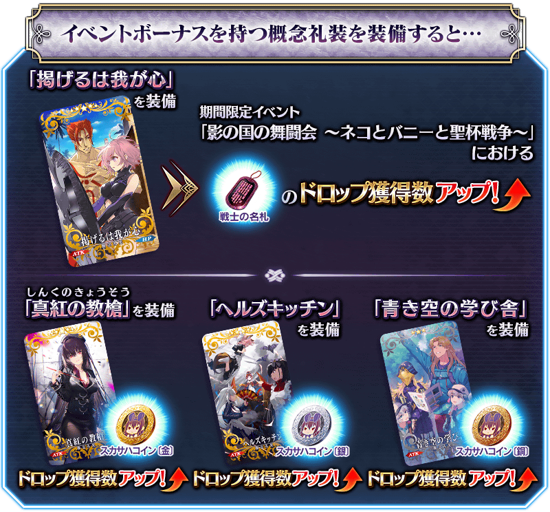
| 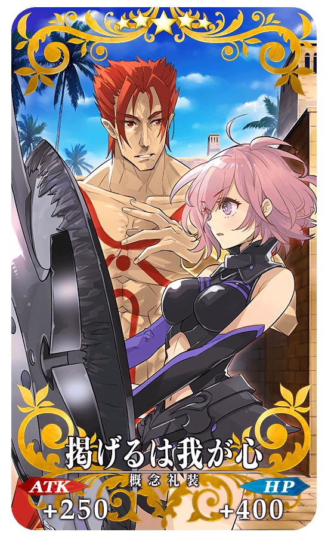 |
★★★★★SSR
|
| 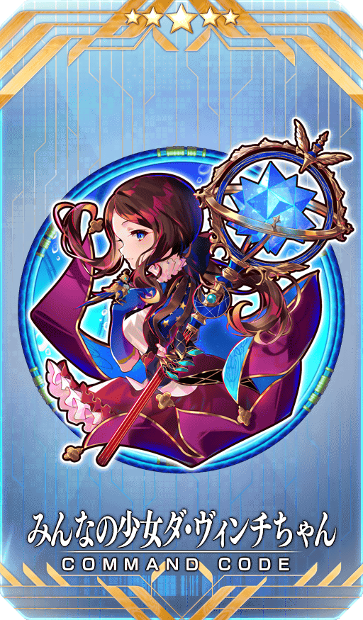 |
【活動限定】 |
| 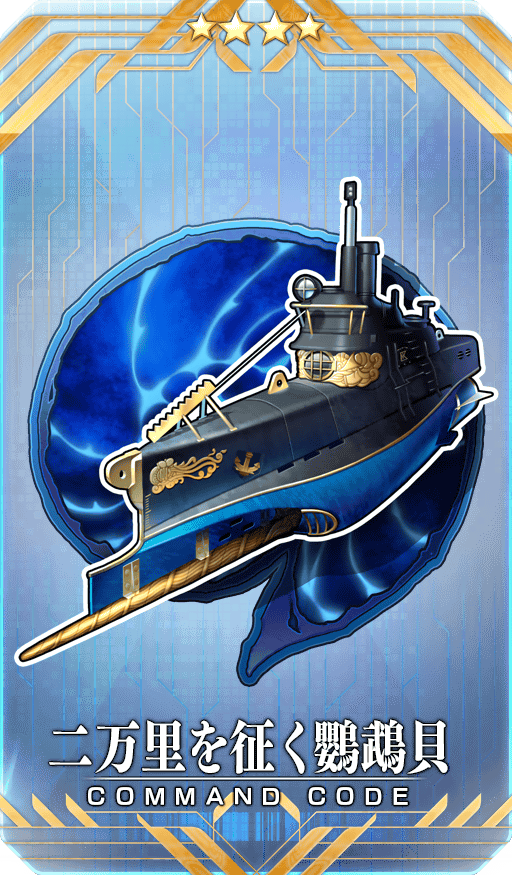 |
★★★★SR |
| 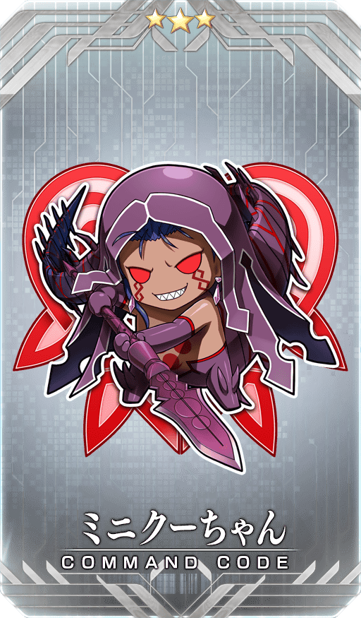 |
★★★R |
活動道具可自點擊管理室(ターミナル)畫面右上「活動報酬」鍵所顯示的「活動道具交換」畫面，交換以下的道具。
※關於英靈結晶・流星之芙芙ALL★4(HP)、英靈結晶・日輪之芙芙ALL★4(ATK)，進行在後日開放的本活動主線關卡後才能交換。
◆交換期間◆
2020年9月18日(五) 17:00～
※活動道具交換期間結束後「魔豬玩偶」「斯卡哈幣〔金〕」「斯卡哈幣〔銀〕」「斯卡哈幣〔銅〕」會消失。
◆能用聖杯之雫交換的道具◆
◆能用魔豬玩偶交換的道具◆
| 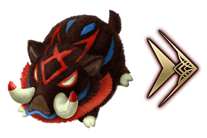 |
【活動報酬指令紋章】 【技能強化＆靈基再臨素材】 【其他道具】 |
◆能用斯卡哈幣〔金〕交換的道具◆
| 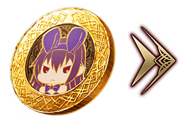 |
【活動限定概念禮裝】 【靈衣開放權】 【技能強化＆靈基再臨素材】 【靈基再臨素材】 【其他道具】 |
◆能用斯卡哈幣〔銀〕交換的道具◆
| 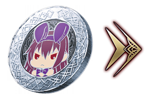 |
【活動限定概念禮裝】 【技能強化＆靈基再臨素材】 【靈基再臨素材】 【其他道具】 |
◆能用斯卡哈幣〔銅〕交換的道具◆
| 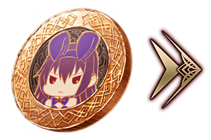 |
【活動限定概念禮裝】 【技能強化＆靈基再臨素材】 【其他道具】 |

「★5(SSR)斯卡哈(Lancer)」的靈衣開放權做為期間限定活動「影之國的舞鬥會 ～貓咪與兔子與聖杯戰爭～」的報酬登場！
可在本活動的活動道具交換入手上述靈衣開放權。
另外，想靈衣開放的話，除了靈衣開放權外再加上必須滿足一些開放條件。
◆有關靈衣開放權的注意◆
※「★5(SSR)斯卡哈(Lancer)」的靈衣開放權只限期間限定活動「影之國的舞鬥會 ～貓咪與兔子與聖杯戰爭～」的活動道具交換期間才能入手。
※「★5(SSR)斯卡哈(Lancer)」的靈衣會配合外觀變化一部份語音。
※請注意未持有「★5(SSR)斯卡哈(Lancer)」的情況，可入手靈衣開放權。但無法進行靈衣開放。

※9月18日(五) 17:00圖片修正

「靈衣開放」是自強化畫面進行。
※「靈衣開放」後會自動切換戰鬥角色和圖示。若想回到「靈衣開放」前的狀態和變成其他再臨階段的情況，可自從者詳細畫面變更。 ※進行「靈衣開放」不會讓職階和能力等有所變化。

【9月18日(五) 17:00追記】
介紹開放靈衣「刺し穿つバニー」的「★5(SSR)斯卡哈(Lancer)」寶具演出！
在「Fate/Grand Order」官方網站內的公告中，以影片公開寶具演出，敬請確認。

【9月18日(五) 17:00追記】
「★5(SSR)斯卡哈(Lancer)」的戰鬥動作及寶具演出翻新！
在「Fate/Grand Order」官方網站內的公告中，以影片公開寶具演出，敬請確認。
◆翻新實施時間◆
2020年9月18日(五) 17:00～

【9月18日(五) 17:00追記】
強化「★5(SSR)斯卡哈(Lancer)」的特別關卡「從者強化關卡」，在迦勒底之門永久追加。
不僅進行對象從者的強化，也可獲得聖晶石做為關卡通過報酬。
※請注意在從者強化關卡沒有文字冒險部份。
◆追加時間◆
2020年9月18日(五) 17:00～
◆開放條件◆
持有的強化對象從者，必須使其最終再臨。
※未持有對象從者的話，不會出現關卡。
※關卡沒有舉辦期限。
【9月18日(五) 17:00追記】
其他還有，期間限定「影之國的舞鬥會Pick Up召喚(每日交替)」同時舉辦！
關於詳情，請自下述橫幅確認。
■「影之國的舞鬥會Pick Up召喚(每日交替)」詳細情報